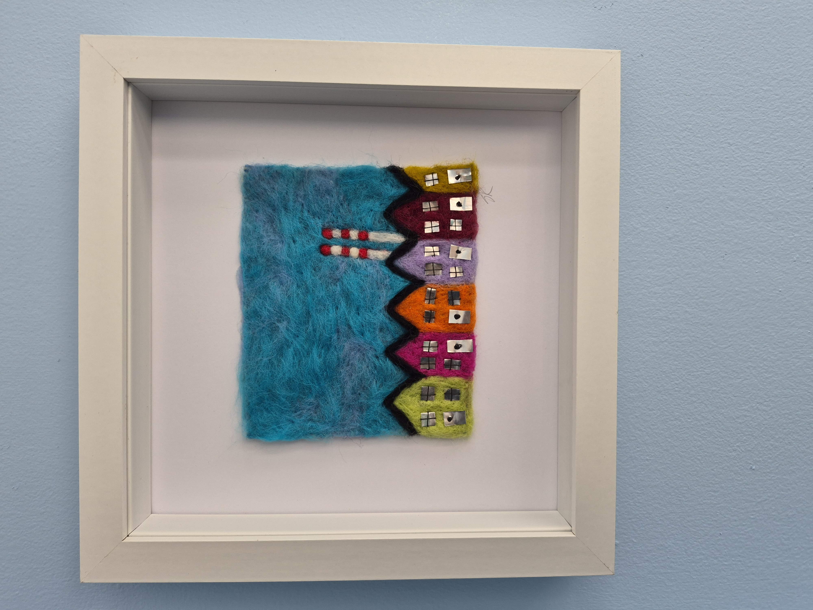

Textile Classes, Embroidery, needlefelting, stitched landscapes, Sashiko and more
Arts and crafts
I'm a textile artist from Dublin with a City & Guilds qualification in Textiles & Embroidery. I teach embroidery, needle felting, stitched landscape classes, Sashiko, and recycling and reusing classes. Follow my page for updates.
Verified 2026-05-25T11:46:28
Contact: 087 620 4441 · sandysosew@gmail.com
Address: Private Address
View on Google Maps →
Visit Website
View on Google Maps →